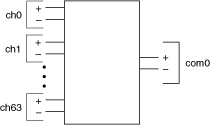
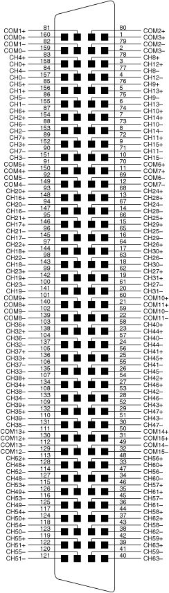

The following figure represents the NI PXI-2576 in the 2-wire 64×1 multiplexer topology.

When using the NI PXI-2576 as a 2-wire 64×1 multiplexer, all positive leads (ch0+ through ch63+) route to com0+, and all negative leads (ch0– through ch63–) route to com0–. The pair com0+ and com0– is addressed collectively as com0 in software.
Both the scanning command, ch2->com0;, and the immediate operation, niSwitch Connect Channels VI or the niSwitch_Connect function with parameters ch2 and com0, result in the following connections:
signal connected to ch2+ is routed to com0+
signal connected to ch2– is routed to com0–
The following figure identifies the pins for the NI PXI-2576 in the 2-wire 64×1 multiplexer topology.
